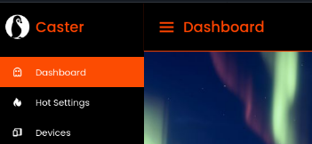
Caster
Caster is a simple framework that allows security researchers to easily locate all supported IoT devices on a network and take advantage of the API endpoints on those devices!
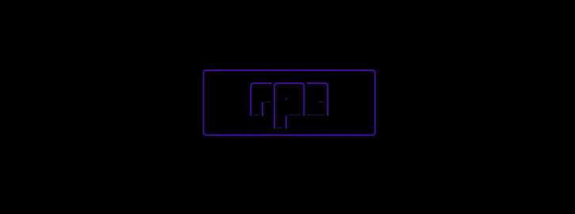
RPC
Otherwise known as Radical Processing Core; RPC is a compiled programming language written in Fortran95 for malware and exploit development. Project is now closed and used for educational purposes
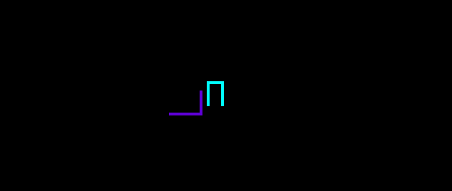
SkyLine
The language from the unknown, the language pulled from the galaxy- a language designed for cyber security researchers meant to be production ready that can natively interact with C/C++/Go/SLC/JSON projects and has full management systems for project design implemented into its engine
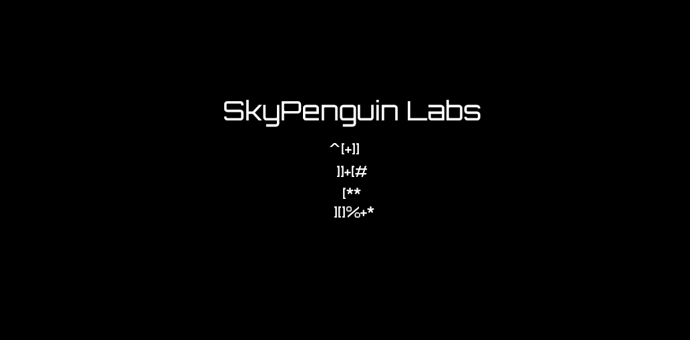
Penguin Cipher
A very wacky and interesting method for transform plaintext into ciphertext using alphanumerical placements, special characters and specific algorithms! The text "^[+]] ]]+[# [** ][]%+*" spells out the phrase " The World Is Yours "
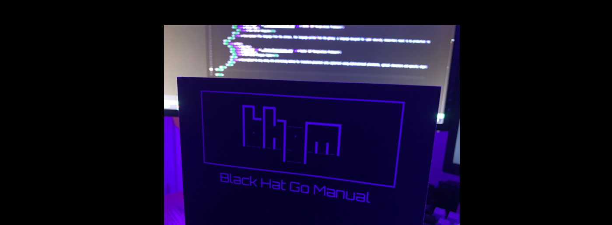
Manuals For Programmers & Hackers
This series of books is the RTFM of the programmer x hacker world. As a developer and especially one who worked with security-related tasks; I always found myself missing some things or missing some tips after transferring languages. These manuals provide a good clean example of code in specific scenarios in a specific language. Manuals are going to come in Python, Go, Ruby, C, C++, and Perl formats and will provide examples of file forensics, data manipulation, vulnerability detection, programmatic flow, code generation, configuration generation, language modification, networking, and more!
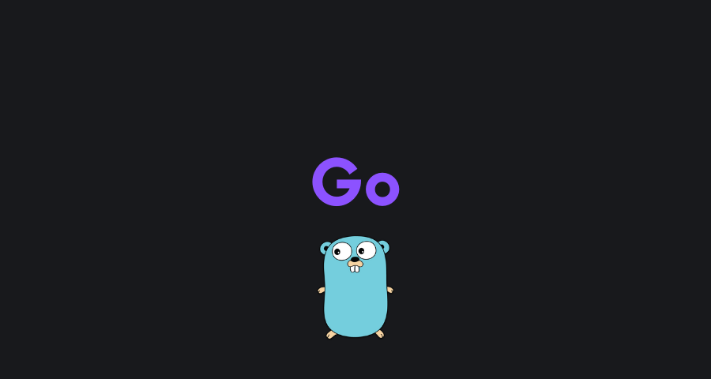
One Buck Courses
This is a heavy project I am working on but basically the idea is to make complex courses nearly free for everyone and can range from $1 to $5 USD and will be supported around the world!
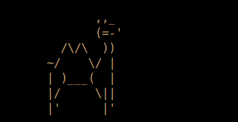
Security with C++ and Go
Security with C++ and Go is a heavy book that will be published in multiple parts going over advanced security topics such as reverse engineering, binary exploitation, protocol reversing and more using language's such as C++ and Go. It will teach you everything from enterprise software cracking tactics and exploit development using language's such as C++/C and Go whilst also teaching you how to utilize Go to write plugins for your projects written in C/C++! A really long and detailed book that will also be self published and edited

IoT Open
A very simple open sourced IoT security framework dedicated to helping people better understand specific software, protocols, systems, internals and more of devices such as the AppleTV, Google ChromeCast, RokuTV, FireStick and other various smart TV and home devices!
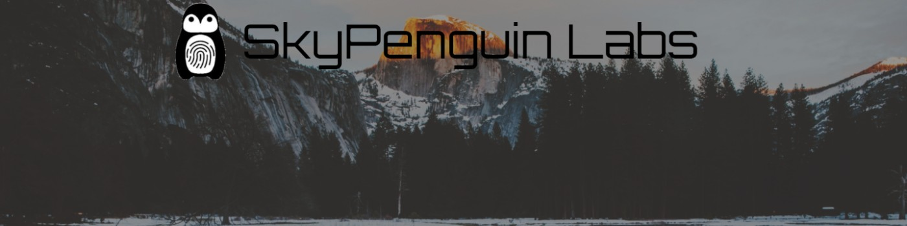
SkyPenguin Labs
My personal labratory I will be working on to post all of my public security research that goes into automotive systems, web systems, hardware and other various research that I do! I will be managing a YouTube channel, Medium blog, sub blog, Discord server and community, GitHub community and other various community pages!
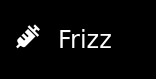
Frizz
Frizz is a packet capturing interface for the web that people can use as an alterantive to a service that would charge $200 a month; I felt like competing with them to ensure that people had a better alternative if they were to speak about it.
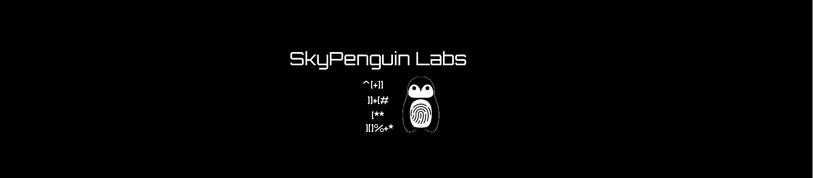
Penguin Method
A very extremely huge project which encompases every system I made during a stage of being a product to social engineering. This system uses my own custom cipher (RNADS), my own programming language (SkyLine or RPC), my own hybrid encryption (HPD Enc), my own database solution system (RDB), my own operating system (SkyOS), custom file types, custom protocol implementation, custom physical cables and hardware as well as toping off the system with custom frameworks dedicated to automating the process. This is one of my biggest projects and was done in under a few weeks of development.
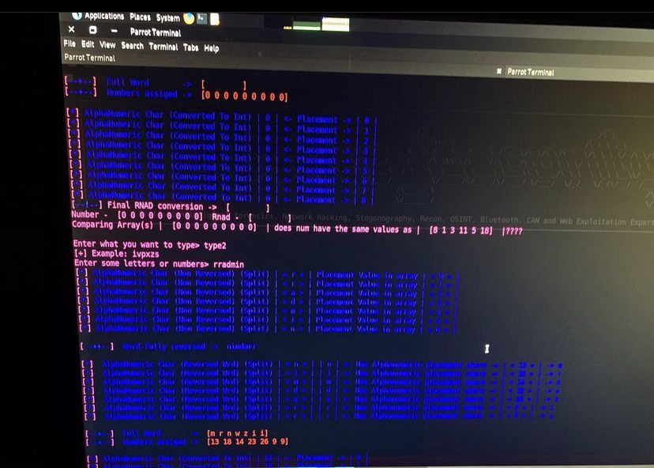
RNADS
A quick and simple cipher for encoding text into numbers based on alphanumerical positions then flipping world keyboards and mixing characters to create a sense of confusion on a decoders end
P6
Known as Piracy6 is a communication language for text based chat rooms which has its own sets of characters taking inspiration from the specific ciphers
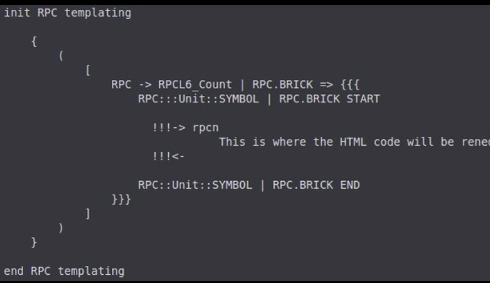
RPCT
Radical Processing Core Templating (RPCT) is a subset of RPC ( Radical Processing Core ) that was apart of its configuration engine. The configuration engine would allow you to work with RPC inline to HTML and properly generate projects. Development stopped due to lack of time and no need to continue on with the project
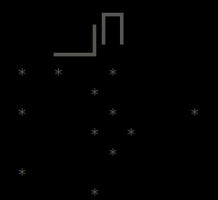
Paths Of An Explorer
I have had quite the interesting life, from building systems due to paranoia all the way to exploiting systems and even building a programming language people could use and contributing to major courses. A ton of people within my community want to understand how I did it, why I did it and why systems and projects like RPC/RPCT, PenguinMethod, PenguinCipher, RNADS, SkyLine, SkyLineConf, SkyLineAutoConf, SkyDB, SkyOS and other systems existed. This will be a deep detail as to how some systems work and may possibly be published for sale. It is a project but its not currently being worked on
SkyOS
A operating system that will be used to manage custom servers and is only command line but also allows you to run code using the SkyLine programming language and interpreter directly
SLC (SkyLine Configuration)
SLC is a project configuration and management engine for the SkyLine programming language that allows for project generation and hybrid development